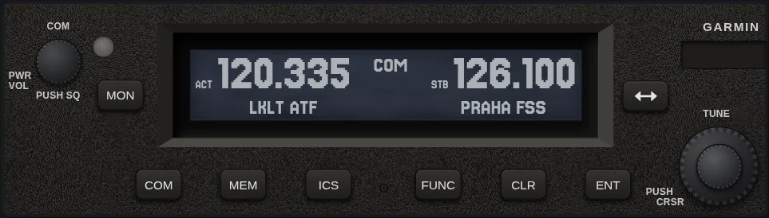
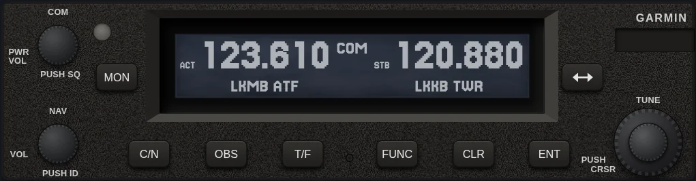
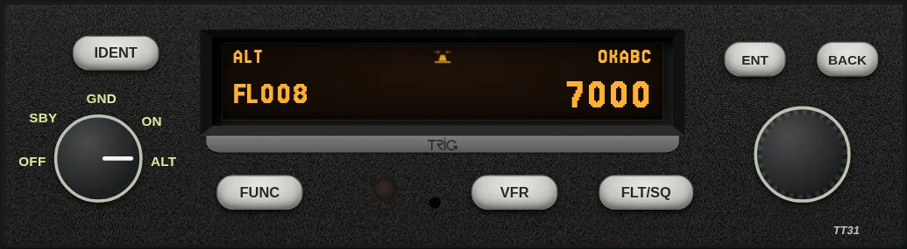
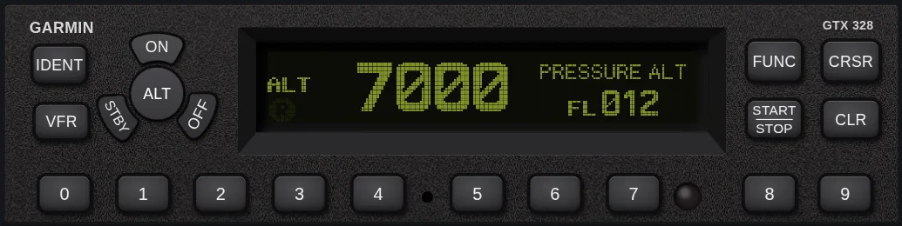
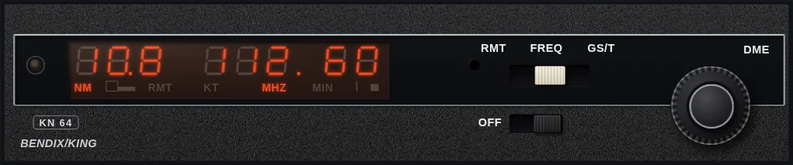
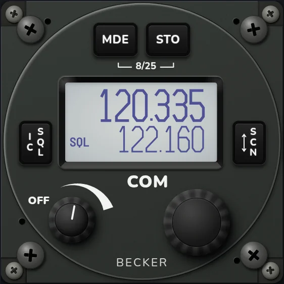

GTR 225A
VHF COM transceiver with 8.33 kHz spacing, intercom, timers and frequency database.
Avionics simulators for practice outside the cockpit, built from the manufacturers' manuals. Pick a unit.

VHF COM transceiver with 8.33 kHz spacing, intercom, timers and frequency database.

NAV/COM: the COM side of the GTR plus a VOR/LOC receiver with OBS/CDI, TO/FROM, DST and Morse ident.

Mode S transponder: mode knob, squawk and Flight ID entry, IDENT, VFR code, flight timer, timer and altitude monitor.

Mode S transponder: mode keys, code entry, IDENT and VFR, pressure altitude, flight time, altitude monitor, count up / down timers, Flight ID entry and the installer configuration pages.

DME with gas discharge display: RMT / FREQ / GS/T function switch, concentric frequency knobs with the pull-out 0.05 MHz, and distance, ground speed and time-to-station from real Czech DMEs on a simulated flight.
Audio control panel with marker beacon receiver: microphone selector, speaker / phone toggles for every receiver, AUTO switch, and the marker lamps and tones on a real Czech ILS approach.

57 mm VHF COM: standard, direct tune and channel modes, scan, 99 labeled channels, last channels, intercom and pilot menus, and the installation setup.